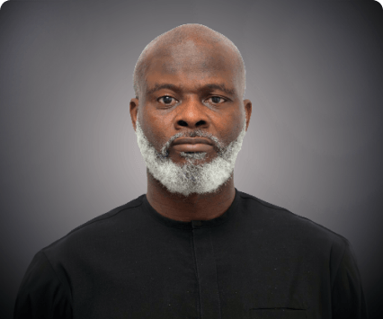

Ikenna Oguike
Ikenna is a seasoned entrepreneur with more than 20 years of experience in strategy, business development, consulting, and project finance.
He has strong experience in West African energy markets and has worked with major global energy supply companies including Glencore, Vitol, Trafigura, and Total.
He has led project finance transactions including the acquisition of a 12,000-hectare oil palm estate and the takeover of a petroleum products refinery in Gabon. He has also been involved in the privatization of power plants in Nigeria and founded companies including Drake Alliance Projects Ltd.
Ikenna led the acquisition of Afam Power Plant Plc and Afam Three Fast Power through the Unicorn Power Generation consortium, and mentors Nigerian start-ups through his accelerator program.